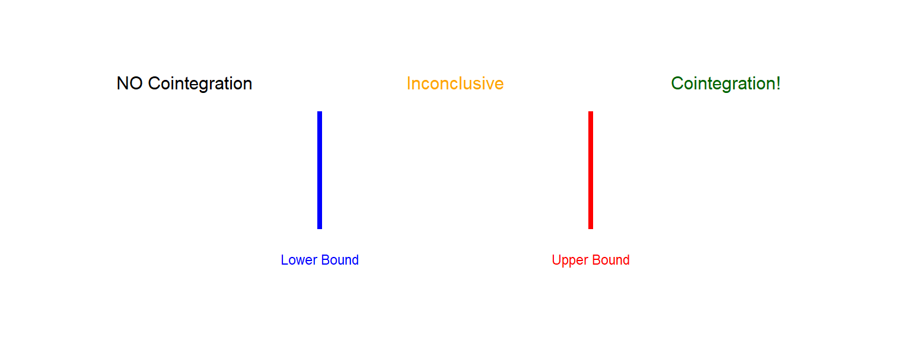

ARDL and ARDL Cointegration
A Practical Guide with R
Outline
- Review: Why Cointegration Matters
- ARDL Models: The Basics
- ARDL Bounds Testing Approach
- Step-by-Step Implementation in R
- Interpreting Results
- Advantages over Johansen Method
- Practical Example with Real Data
Review: Cointegration Basics
What is Cointegration?
Recall from Johansen Method:
- Two or more non-stationary series (I(1)) can have a stationary linear combination
- This implies a long-run equilibrium relationship
- Short-run deviations are temporary
Example: \[Y_t = \beta_0 + \beta_1 X_t + u_t\]
If \(Y_t \sim I(1)\) and \(X_t \sim I(1)\), but \(u_t \sim I(0)\), then \(Y\) and \(X\) are cointegrated.
Note
Cointegration prevents spurious regression problems!
Johansen Method: Key Requirements
You already know Johansen cointegration requires:
- All variables must be I(1) - same order of integration
- System of equations - VAR framework
- Pre-testing for unit roots is essential
- Trace test or Maximum eigenvalue test
- Assumes symmetric adjustment to equilibrium
Important
Question: What if some variables are I(0) and others are I(1)?
Answer: This is where ARDL comes in!
ARDL Models
What is ARDL?
AutoRegressive Distributed Lag Model
General form with one dependent and one independent variable:
\[Y_t = \alpha_0 + \sum_{i=1}^{p}\beta_i Y_{t-i} + \sum_{j=0}^{q}\gamma_j X_{t-j} + \varepsilon_t\]
- AutoRegressive (AR): lags of dependent variable \(Y_{t-1}, Y_{t-2}, ...\)
- Distributed Lag (DL): current and lagged values of \(X_t, X_{t-1}, X_{t-2}, ...\)
- p: lag order for Y (AR part)
- q: lag order for X (DL part)
- Denoted as ARDL(p, q)
Why Use ARDL?
Flexibility in modeling dynamic relationships:
- Captures short-run dynamics (through differenced terms)
- Estimates long-run relationships (through level terms)
- Allows different lag lengths for different variables
- Can include exogenous variables easily
- Works with small sample sizes (minimum ~30 observations)
Tip
ARDL is particularly useful for macroeconomic data where relationships have both immediate and lagged effects.
ARDL with Multiple Variables
With multiple independent variables:
\[Y_t = \alpha_0 + \sum_{i=1}^{p}\beta_i Y_{t-i} + \sum_{j=0}^{q_1}\gamma_{1j} X_{1,t-j} + \sum_{j=0}^{q_2}\gamma_{2j} X_{2,t-j} + \sum_{j=0}^{q_3}\gamma_{3j} X_{3,t-j} + \varepsilon_t\]
- Denoted as ARDL(p, q₁, q₂, q₃)
- Each variable can have different optimal lag length
- Example: ARDL(2, 1, 3, 0) means:
- 2 lags of Y
- 1 lag of X₁
- 3 lags of X₂
- 0 lags (contemporaneous only) of X₃
ARDL Bounds Testing Approach
The Innovation: Pesaran, Shin & Smith (2001)
The PSS (2001) Bounds Testing Approach
- Revolutionary paper: “Bounds testing approaches to the analysis of level relationships”
- Key innovation: Test for cointegration without pre-testing for unit roots
- Works with variables that are:
- I(0) - stationary
- I(1) - first difference stationary
- Mix of I(0) and I(1)
Warning
Important restriction: Variables cannot be I(2) or higher!
You still need to check this.
How Does It Work?
Two-step transformation:
Step 1: Original ARDL model in levels
Step 2: Transform to Error Correction Model (ECM) representation
\[\Delta Y_t = \beta_0 + \sum_{i=1}^{p-1}\beta_i \Delta Y_{t-i} + \sum_{j=0}^{q-1}\gamma_j \Delta X_{t-j} + \underbrace{\theta_0 Y_{t-1} + \theta_1 X_{t-1}}_{\text{Long-run relationship}} + \varepsilon_t\]
Note
The lagged level terms (\(Y_{t-1}, X_{t-1}\)) capture the long-run relationship!
The Bounds Test
Hypothesis Testing:
\[H_0: \theta_0 = \theta_1 = 0 \quad \text{(No cointegration)}\] \[H_1: \theta_0 \neq 0 \text{ or } \theta_1 \neq 0 \quad \text{(Cointegration exists)}\]
Test using F-statistic (or Wald test)
- But: F-statistic has non-standard distribution
-
Solution: PSS provide critical value bounds
- Lower bound I(0): assumes all variables are I(0)
- Upper bound I(1): assumes all variables are I(1)
Decision Rules
Compare your F-statistic with critical value bounds:
- F < Lower bound → No cointegration (reject relationship)
- Lower < F < Upper → Inconclusive (need unit root tests)
- F > Upper bound → Cointegration exists! (proceed to estimate)
Critical Values
PSS (2001) provide tables based on:
- Number of variables (k)
- Sample size
- Significance level (1%, 5%, 10%)
- Model specification (with/without trend)
Example critical values at 5% level (k=3, n=large):
| Bound Type | Critical Value |
|---|---|
| I(0) | 3.23 |
| I(1) | 4.35 |
Tip
Modern R packages calculate these automatically!
Step-by-Step ARDL Process
The Complete Workflow
Step 1: Check Order of Integration
- Ensure no I(2) variables using ADF/PP tests
- Variables can be I(0), I(1), or mixed
Step 2: Estimate ARDL Model
- Select optimal lag lengths using AIC/BIC
- Estimate the unrestricted ARDL model
Step 3: Bounds Test
- Test for cointegration using F-statistic
- Compare with critical bounds
Workflow Continued
Step 4: If Cointegration Exists
Estimate the long-run relationship:
\[Y_t = \beta_0 + \beta_1 X_{1,t} + \beta_2 X_{2,t} + \beta_3 X_{3,t} + u_t\]
Step 5: Error Correction Model (ECM)
\[\Delta Y_t = \text{short-run dynamics} + \delta \cdot ECT_{t-1} + \varepsilon_t\]
Where \(ECT_{t-1} = Y_{t-1} - \hat{\beta}_0 - \hat{\beta}_1 X_{1,t-1} - \hat{\beta}_2 X_{2,t-1} - \hat{\beta}_3 X_{3,t-1}\)
Important
\(\delta\) should be negative and significant for valid cointegration!
Implementing ARDL in R
Required Packages
# Install if needed
install.packages("ARDL")
install.packages("dynamac")
install.packages("dplyr")
install.packages("tseries")
install.packages("urca")
install.packages("ggplot2")Load and Prepare Data
Let’s use a practical example: Relationship between Consumption, Income, and Interest Rate
# Example with simulated data (replace with your real data)
set.seed(123)
n <- 100
# Create time series
time <- 1:n
income <- 100 + 0.5*time + cumsum(rnorm(n, 0, 2))
interest <- 5 + 0.01*time + rnorm(n, 0, 0.5)
consumption <- 20 + 0.7*income - 2*interest + rnorm(n, 0, 3)
# Create data frame
data <- data.frame(
time = time,
consumption = consumption,
income = income,
interest = interest
)
head(data)Step 1: Unit Root Tests
Check that no variables are I(2):
# ADF test function
adf_test <- function(x) {
test <- ur.df(x, type = "trend", lags = 4)
return(test@teststat[1])
}
# Test levels
cat("ADF Test - Levels:\n")
cat("Consumption:", adf_test(data$consumption), "\n")
cat("Income:", adf_test(data$income), "\n")
cat("Interest:", adf_test(data$interest), "\n")
# Test first differences
cat("\nADF Test - First Differences:\n")
cat("D.Consumption:", adf_test(diff(data$consumption)), "\n")
cat("D.Income:", adf_test(diff(data$income)), "\n")
cat("D.Interest:", adf_test(diff(data$interest)), "\n")
Note
Critical value at 5%: approximately -3.45 (with trend)
Step 2: Select Optimal Lags
# Auto-select lags using AIC
ardl_model <- auto_ardl(
consumption ~ income + interest,
data = data,
max_order = 5, # Maximum lag to consider
selection = "AIC" # Can also use "BIC"
)
# View selected model
summary(ardl_model)
# Get the selected lag order
ardl_model$order
# Output example: (2, 1, 3) means ARDL(2,1,3)
Tip
AIC (Akaike) - better for prediction
BIC (Schwarz) - more parsimonious, better for small samples
Step 3: Bounds Test
# Perform bounds test for cointegration
bounds_test <- bounds_f_test(
ardl_model,
case = 3 # Case 3: unrestricted intercept, no trend
)
# View results
bounds_test
# The output shows:
# - F-statistic
# - Lower bound I(0)
# - Upper bound I(1)
# - DecisionInterpretation:
Step 4: Long-Run Relationship
If cointegration is confirmed:
# Extract long-run coefficients
lr_model <- multipliers(ardl_model, type = "lr")
# View long-run relationship
summary(lr_model)
# Long-run elasticities
lr_model$coefficientsOutput interpretation:
- Coefficient for income: long-run marginal propensity to consume
- Coefficient for interest: long-run effect of interest rate on consumption
- Standard errors and t-statistics: test significance of long-run effects
Step 5: Error Correction Model
Key checks:
- ECT coefficient should be negative (adjustment toward equilibrium)
- ECT coefficient should be significant (p < 0.05)
- Magnitude indicates speed of adjustment
- Example: -0.3 means 30% of disequilibrium corrected each period
Diagnostic Tests
Always check model validity:
# 1. Serial Correlation Test
bg_test <- bgtest(ardl_model, order = 4)
print(bg_test)
# 2. Heteroskedasticity Test
bp_test <- bptest(ardl_model)
print(bp_test)
# 3. Normality Test
jb_test <- jarque.bera.test(residuals(ardl_model))
print(jb_test)
# 4. Stability Test (CUSUM)
plot(stability(ardl_model, type = "cusum"))
Warning
If diagnostics fail, consider:
- Adding more lags
- Including dummy variables
- Transforming variables (log)
Interpreting Results
Understanding Coefficients
Short-Run Coefficients (from ARDL/ECM):
- \(\Delta income\): immediate (impact) effect on consumption
- \(\Delta interest\): immediate effect of interest rate change
Long-Run Coefficients:
- Show equilibrium relationships
- More policy-relevant for structural analysis
Error Correction Term
Example: \(ECT_{t-1} = -0.35\) (p-value < 0.01)
Interpretation:
- Negative sign: Confirms cointegration (adjustment toward equilibrium)
- Magnitude 0.35: 35% of disequilibrium is corrected each period
- Time to equilibrium: Roughly \(1/0.35 \approx 2.86\) periods
- Significance: The long-run relationship is statistically valid
Important
If ECT > 0 or insignificant, the cointegration relationship is questionable!
Visualizing Results
# Plot actual vs fitted values
plot(ardl_model)
# Plot residuals
residuals_df <- data.frame(
time = 1:length(residuals(ardl_model)),
residuals = residuals(ardl_model)
)
ggplot(residuals_df, aes(x = time, y = residuals)) +
geom_line() +
geom_hline(yintercept = 0, color = "red", linetype = "dashed") +
labs(title = "ARDL Model Residuals",
x = "Time", y = "Residuals") +
theme_minimal()
# Plot dynamic forecasts
forecast_plot <- forecast(ardl_model, h = 10)
plot(forecast_plot)ARDL vs Johansen Method
Comparison Table
| Feature | ARDL Bounds Test | Johansen Method |
|---|---|---|
| Order of integration | I(0), I(1), or mixed | All must be I(1) |
| Pre-testing required | No (only check not I(2)) | Yes (must confirm I(1)) |
| Estimation | Single equation | System (VAR) |
| Complexity | Simpler | More complex |
| Small samples | Works well (n≥30) | Needs larger samples |
| Different lags | Yes, per variable | No, same for all |
| Endogeneity | Can handle with lags | Better for simultaneous equations |
When to Use ARDL
ARDL is preferred when:
- Mixed integration orders (some I(0), some I(1))
- Small sample size (< 100 observations)
- Single equation focus (one dependent variable of interest)
- Different dynamics across variables
- Simpler interpretation is desired
- Preliminary analysis before full system estimation
When to Use Johansen
Johansen is preferred when:
- Multiple cointegrating relationships suspected
- All variables are I(1) (confirmed)
- System-wide analysis needed
- Simultaneous determination (multiple endogenous variables)
- Large sample available
- Bidirectional causality important
Note
Many researchers use both methods as robustness checks!
Practical Example
Real Data Example
Let’s analyze the relationship between GDP, Investment, and Government Spending using Pakistani data:
# Load data (example - use your own data)
library(readr)
pak_data <- read_csv("pakistan_macro.csv")
# Variables:
# - gdp: Real GDP (in billions)
# - investment: Gross Fixed Capital Formation
# - govt_spending: Government Expenditure
# Take logs for elasticity interpretation
pak_data <- pak_data %>%
mutate(
log_gdp = log(gdp),
log_inv = log(investment),
log_govt = log(govt_spending)
)Unit Root Tests
library(urca)
# ADF tests on levels
adf_gdp <- ur.df(pak_data$log_gdp, type = "trend", lags = 4)
adf_inv <- ur.df(pak_data$log_inv, type = "trend", lags = 4)
adf_govt <- ur.df(pak_data$log_govt, type = "trend", lags = 4)
# Summary
summary(adf_gdp)
summary(adf_inv)
summary(adf_govt)
# Check first differences if needed
adf_d_gdp <- ur.df(diff(pak_data$log_gdp), type = "trend", lags = 4)
summary(adf_d_gdp)Expected result: Variables are I(1), good for ARDL!
Estimate ARDL Model
Bounds Test Results
# Perform bounds test
bounds_result <- bounds_f_test(ardl_pak, case = 3)
# View results
print(bounds_result)
# Example output:
# F-statistic Lower.bound Upper.bound
# 10% 5.234 2.72 3.77
# 5% 5.234 3.23 4.35
# 1% 5.234 4.29 5.61Interpretation: F = 5.234 > Upper bound at 5% (4.35)
→ Strong evidence of cointegration!
Long-Run Results
# Extract long-run coefficients
lr_pak <- multipliers(ardl_pak, type = "lr")
# View results
summary(lr_pak)
# Example output:
# Estimate Std.Error t-value Pr(>|t|)
# log_inv 0.456 0.089 5.123 0.000 ***
# log_govt 0.234 0.067 3.493 0.001 **Economic Interpretation:
- 1% increase in investment → 0.456% increase in GDP (long-run)
- 1% increase in govt spending → 0.234% increase in GDP (long-run)
ECM Results
# Estimate ECM
ecm_pak <- ecm(ardl_pak)
# View results
summary(ecm_pak)
# Example output:
# Estimate Std.Error t-value Pr(>|t|)
# ect -0.428 0.098 -4.367 0.000 ***
# d(log_inv) 0.312 0.076 4.105 0.000 ***
# d(log_govt) 0.189 0.054 3.500 0.001 **Interpretation:
- ECT = -0.428: About 43% of disequilibrium corrected per period
- Speed of adjustment: \(1/0.428 \approx 2.3\) periods to equilibrium
- Short-run effects also significant
Diagnostic Checks
# Load required package
library(lmtest)
# 1. Breusch-Godfrey Test (Serial Correlation)
bgtest(ardl_pak, order = 4)
# H0: No serial correlation
# 2. Breusch-Pagan Test (Heteroskedasticity)
bptest(ardl_pak)
# H0: Homoskedastic errors
# 3. Jarque-Bera Test (Normality)
jarque.bera.test(residuals(ardl_pak))
# H0: Errors are normally distributed
# 4. CUSUM Test (Stability)
cusum_test <- stability(ardl_pak, type = "cusum")
plot(cusum_test)Visualizing the Relationship
# Plot actual vs fitted
library(ggplot2)
fitted_vals <- fitted(ardl_pak)
actual_vals <- pak_data$log_gdp[1:length(fitted_vals)]
plot_df <- data.frame(
time = 1:length(actual_vals),
actual = actual_vals,
fitted = fitted_vals
)
ggplot(plot_df, aes(x = time)) +
geom_line(aes(y = actual, color = "Actual"), size = 1) +
geom_line(aes(y = fitted, color = "Fitted"), size = 1, linetype = "dashed") +
labs(title = "ARDL Model: Actual vs Fitted Values",
subtitle = "Log GDP in Pakistan",
x = "Time Period", y = "Log GDP",
color = "Series") +
theme_minimal() +
theme(legend.position = "bottom")Advanced Topics
ARDL with Structural Breaks
If you suspect structural breaks (e.g., policy changes, crises):
ARDL with Non-linear Effects
Include squared terms for non-linear relationships:
Test for non-linearity: If \(\beta_{inv^2}\) is significant, relationship is non-linear
NARDL: Non-linear ARDL
Account for asymmetric effects (positive vs negative changes):
Note
NARDL is useful when effects differ in expansions vs recessions
Common Mistakes & Tips
Common Mistakes
-
Not checking for I(2) variables
- Always test! I(2) invalidates bounds test
-
Ignoring diagnostic tests
- Serial correlation biases standard errors
- Check residuals carefully
-
Over-fitting with too many lags
- Use information criteria (AIC/BIC)
- Keep model parsimonious
-
Misinterpreting ECT sign
- Must be negative for valid cointegration
- Positive ECT = explosive process
Common Mistakes (continued)
-
Not testing coefficient restrictions
- Test long-run coefficients significance
- Use Wald tests when needed
-
Ignoring structural breaks
- Check data for known shocks/policy changes
- Use CUSUM/CUSUMSQ tests
-
Wrong case selection in bounds test
- Case 1: No intercept, no trend
- Case 2: Restricted intercept, no trend
- Case 3: Unrestricted intercept, no trend ← Most common
- Case 4: Unrestricted intercept, restricted trend
- Case 5: Unrestricted intercept, unrestricted trend
Best Practices
-
Always plot your data first
- Check for trends, breaks, outliers
-
Use log transformations when appropriate
- For multiplicative relationships
- To interpret coefficients as elasticities
-
Report multiple model specifications
- Different lag lengths
- With/without additional controls
-
Conduct robustness checks
- Compare ARDL with Johansen
- Try different lag selection criteria
-
Interpret economically, not just statistically
- Do magnitudes make sense?
- Are signs consistent with theory?
Reporting ARDL Results
In your paper/thesis, report:
- Unit root test results (confirm not I(2))
- Selected ARDL specification and lag selection criteria
- Bounds test results with F-statistic and decision
- Long-run coefficients with standard errors
- Short-run coefficients and ECT from ECM
- Diagnostic test results (serial correlation, heteroskedasticity, normality, stability)
- Economic interpretation of all key coefficients
Tip
Create a comprehensive table with all results for easy reference!
Conclusion & Resources
Summary
Key Takeaways:
- ARDL is flexible - works with I(0), I(1), or mixed
- Bounds testing avoids unit root pre-testing debates
- Simpler than Johansen for single equation models
- Provides both short-run dynamics and long-run equilibrium
- R implementation is straightforward with ARDL package
- Always check diagnostics and stability
- Economic interpretation matters most!
When to Use What?
Quick Decision Guide:
flowchart TD
A[Start: Check Your Data] --> B{Variables <br/> mixed I0/I1?}
B -->|Yes| C[Use ARDL]
B -->|No, All I1| D{Small sample <br/> n < 80?}
D -->|Yes| C
D -->|No| E{Single equation <br/> focus?}
E -->|Yes| F[ARDL preferred <br/> Simpler]
E -->|No| G{Multiple <br/> cointegrating <br/> relations?}
G -->|Yes| H[Use Johansen]
G -->|No| F
style C fill:#90EE90
style H fill:#FFB6C1
style F fill:#90EE90
C --> I[ARDL Bounds Test]
H --> J[Johansen Test]
F --> K[Either works <br/> Use both for robustness]flowchart TD
A[Start: Check Your Data] --> B{Variables <br/> mixed I0/I1?}
B -->|Yes| C[Use ARDL]
B -->|No, All I1| D{Small sample <br/> n < 80?}
D -->|Yes| C
D -->|No| E{Single equation <br/> focus?}
E -->|Yes| F[ARDL preferred <br/> Simpler]
E -->|No| G{Multiple <br/> cointegrating <br/> relations?}
G -->|Yes| H[Use Johansen]
G -->|No| F
style C fill:#90EE90
style H fill:#FFB6C1
style F fill:#90EE90
C --> I[ARDL Bounds Test]
H --> J[Johansen Test]
F --> K[Either works <br/> Use both for robustness]
Key Decision Points:
-
Mixed Integration?
- I(0) and I(1) mixed → ARDL only
-
Sample Size?
- Small (n<80) → ARDL better
- Large (n>100) → Both work
-
Research Focus?
- Single equation → ARDL simpler
- System dynamics → Johansen
-
Multiple Cointegration?
- Multiple relations → Johansen
- Single relation → ARDL
Tip
Best Practice: Use both methods as robustness checks when possible!
R Packages Summary
Essential packages:
# ARDL analysis
install.packages("ARDL") # Main package
install.packages("dynamac") # Alternative
# Unit root tests
install.packages("urca") # Comprehensive tests
install.packages("tseries") # ADF, PP, KPSS
# Diagnostics
install.packages("lmtest") # LM tests
install.packages("car") # VIF, other tests
# Visualization
install.packages("ggplot2") # Publication-quality plotsAdditional Resources
Key Papers:
Pesaran, M. H., Shin, Y., & Smith, R. J. (2001). Bounds testing approaches to the analysis of level relationships. Journal of Applied Econometrics, 16(3), 289-326.
Pesaran, M. H., & Shin, Y. (1999). An autoregressive distributed lag modelling approach to cointegration analysis.
Online Resources:
- ARDL R package documentation:
help(package = "ARDL") - Econometrics tutorials: https://www.econometrics-with-r.org/
- Time series in R: https://otexts.com/fpp3/
Practice Exercise
Try this on your own:
- Load any macroeconomic dataset with 3-4 variables
- Test for unit roots (ensure not I(2))
- Estimate an ARDL model using
auto_ardl() - Conduct bounds test for cointegration
- If cointegrated:
- Estimate long-run relationship
- Estimate ECM
- Interpret the speed of adjustment
- Run diagnostic tests
- Visualize actual vs fitted values
Tip
Start with Pakistani data from World Bank or State Bank of Pakistan!
Questions?
Thank you!
Contact:
- Email: your.email@university.edu
- Office Hours: [Your hours]
NoteRemember:
Practice makes perfect. Start with simple examples and gradually increase complexity!
References
Pesaran, M. H., Shin, Y., & Smith, R. J. (2001). Bounds testing approaches to the analysis of level relationships. Journal of Applied Econometrics, 16(3), 289-326.
Pesaran, M. H., & Shin, Y. (1999). An autoregressive distributed lag modelling approach to cointegration analysis. Econometrics and Economic Theory in the 20th Century: The Ragnar Frisch Centennial Symposium, 371-413.
Nkoro, E., & Uko, A. K. (2016). Autoregressive Distributed Lag (ARDL) cointegration technique: application and interpretation. Journal of Statistical and Econometric Methods, 5(4), 63-91.
Jordan, S., & Philips, A. Q. (2018). Cointegration testing and dynamic simulations of autoregressive distributed lag models. The Stata Journal, 18(4), 902-923.